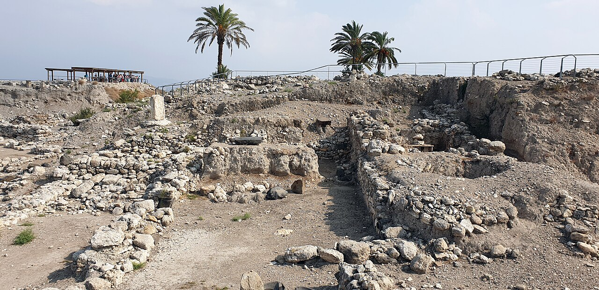

Foto atual principal

Tel Megido e a região associada ao nome Armagedom
A fotografia mostra Tel Megido. No material, Armagedom é uma menção simbólica; a imagem não representa um futuro campo de batalha literal.
Abrir fonte principalDados geográficos
- Tipo
- Local simbólico/profético
- Local atual
- Megido / vale de Jezreel
- Coordenadas
- 32.584183, 35.182292
- Referência
- EPSG:4326 — WGS 84
- Confiança
- Simbólico
Localização e mapa por satélite
Coordenadas: 32.584183, 35.182292
Tipo: Local simbólico/profético
Confiança: Simbólico
Para regiões, rios, mares e locais incertos, o ponto representa a referência cartográfica usada no QGIS.